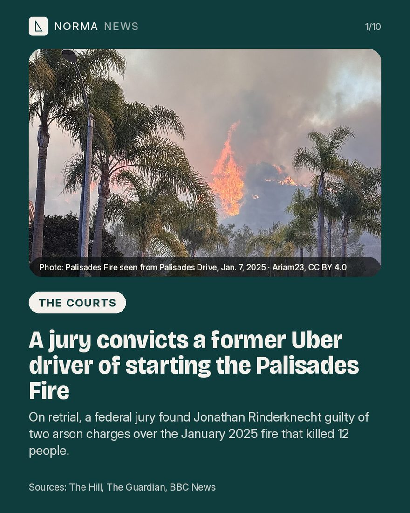
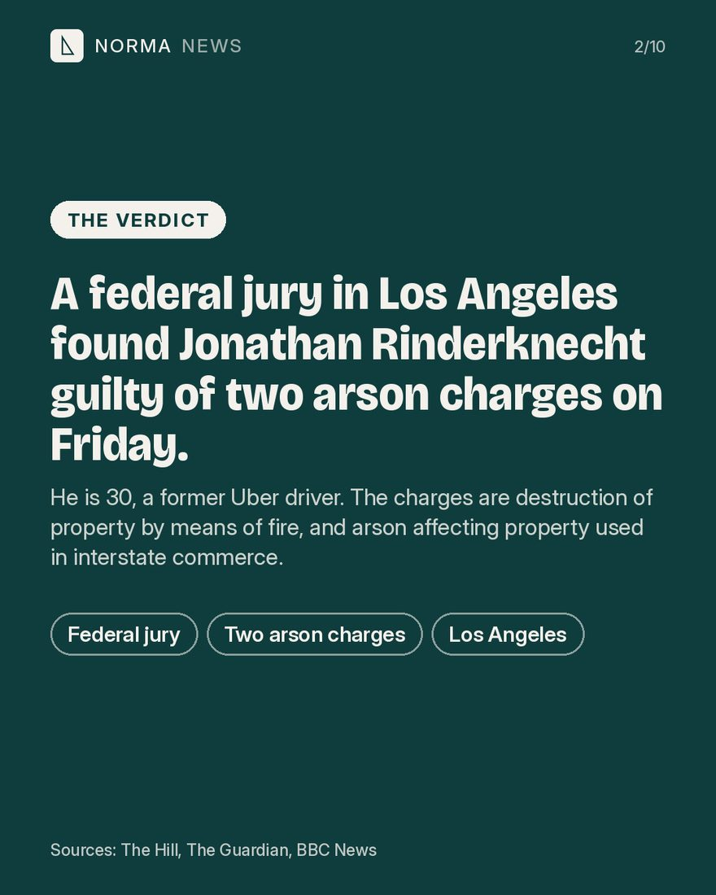
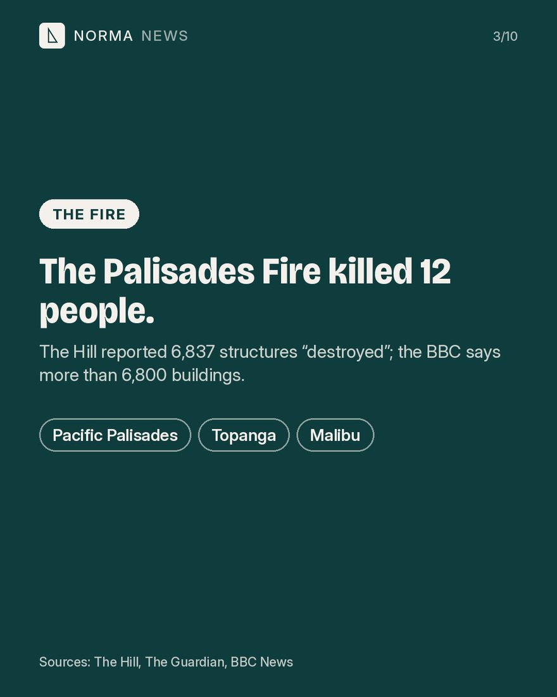
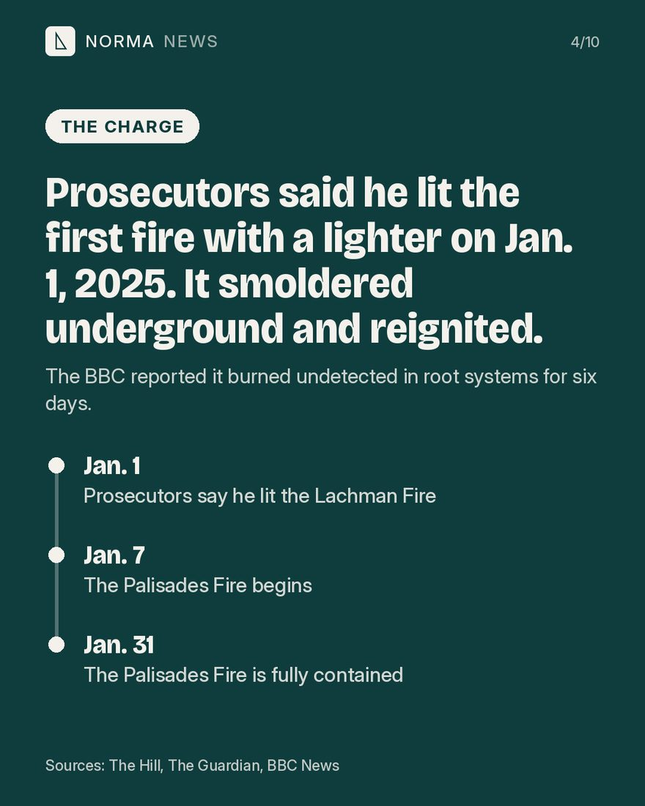
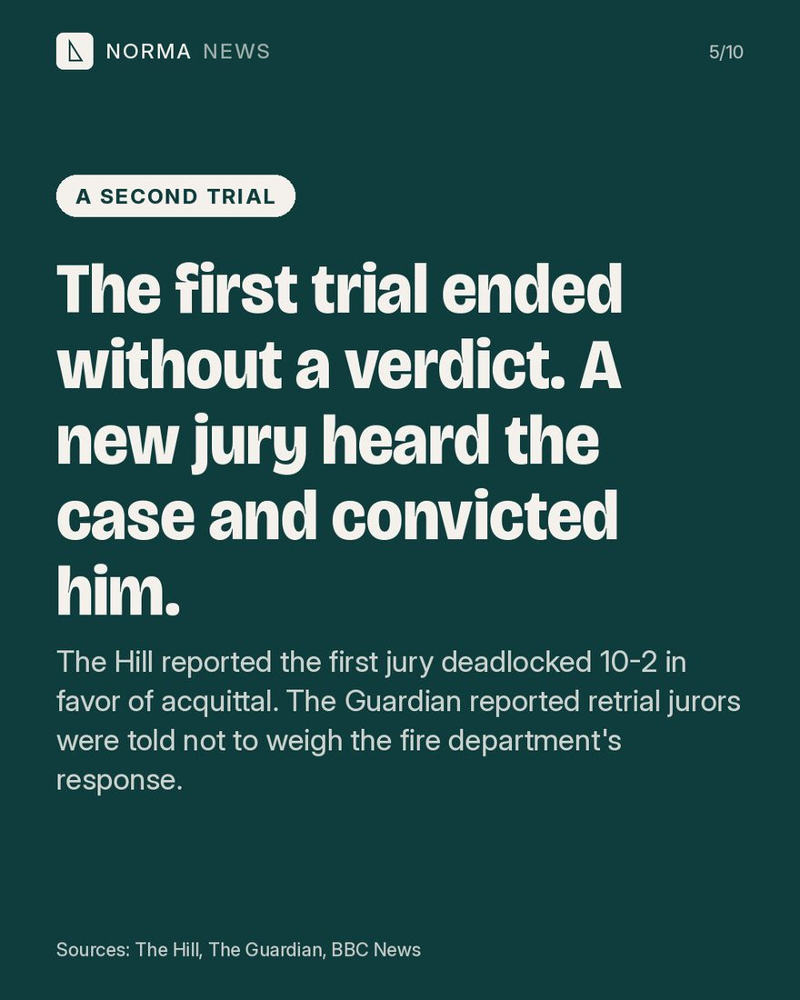
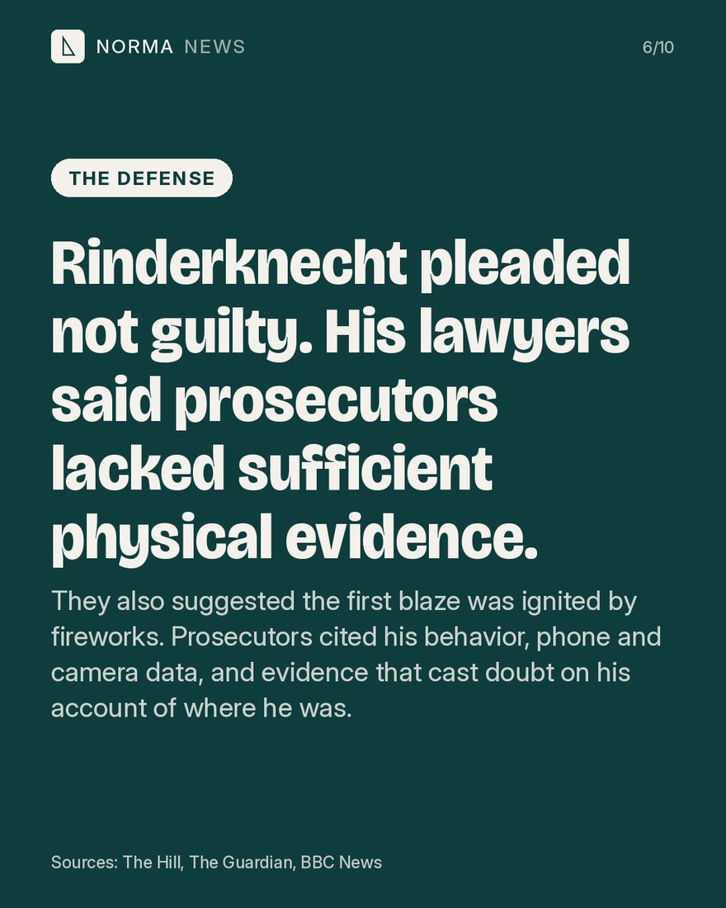
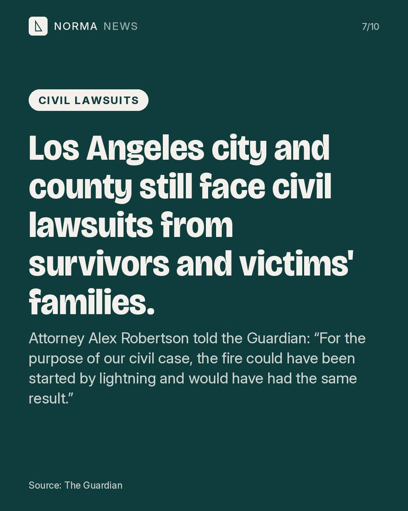
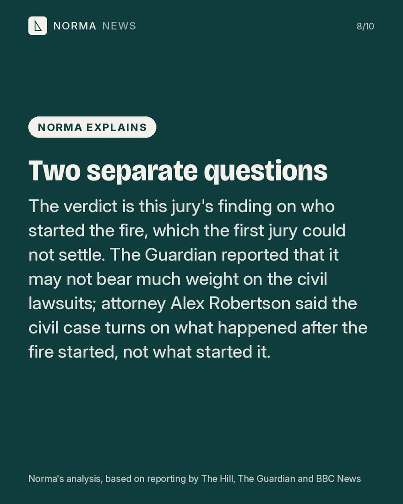
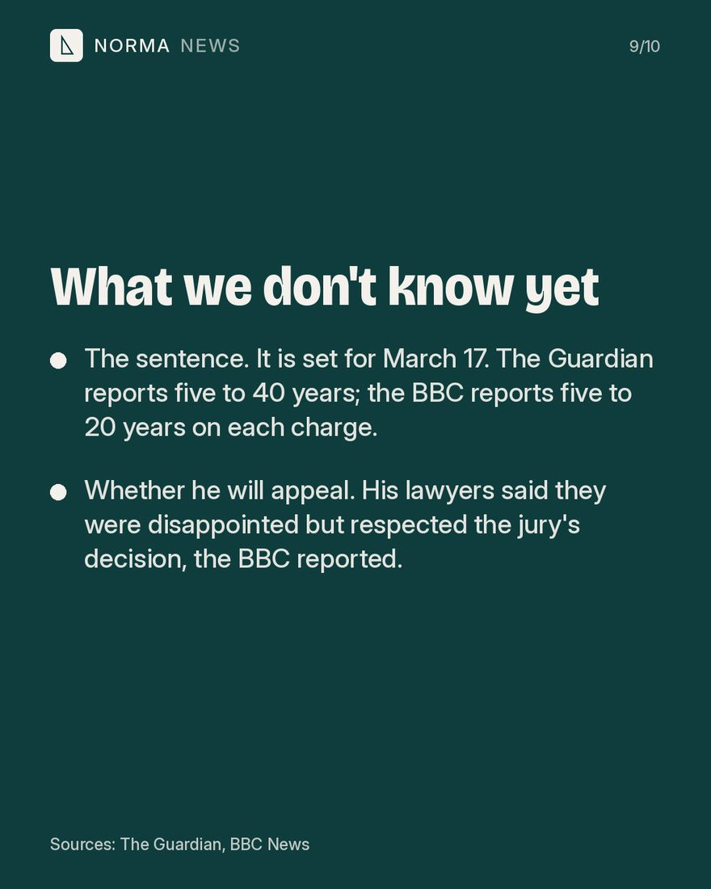
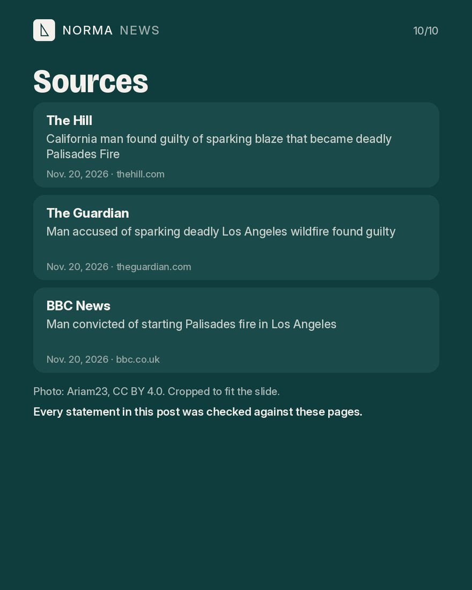

The courts
A jury convicts a former Uber driver of starting the Palisades Fire
On retrial, a federal jury found Jonathan Rinderknecht guilty of two arson charges over the January 2025 fire that killed 12 people.










Swipe, use the arrows, or click either half of a slide.